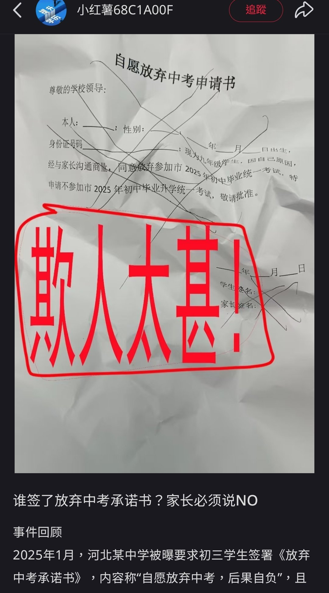

星野ふじ
@hoshinofujivy
我高三时，临近高考（差不多也是这个时段）
我们模拟考试后，学校找学生家长谈话，建议我们这些差生（我模拟成绩369）回家学习，必要的话选择复读。
我也是凭着反骨的劲头，死活不回去
高考那天，我让家长给我送来mp3和耳机。就这样听着音乐，坐着大巴进入考场，同学都在紧张地看书。
那三天，我不过就是去考场随便做了几道题，出来后一身轻。
出分那天，我正在夜爬（石家庄抱犊寨）,525分，也差不多，最后选了北京的一所学校
